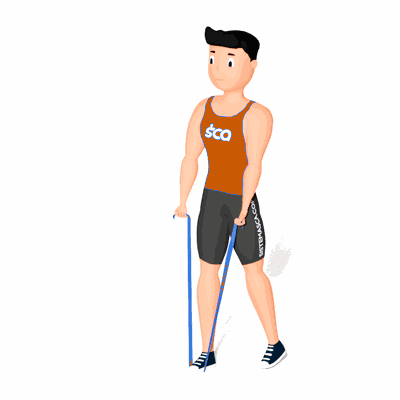

Elevação Lateral com Faixa Elástica

O exercício auxilia no fortalecimento e hipertrofia dos músculos da região dos ombros, com enfoque no deltoide anterior e lateral.
Ficha Técnica
Tipo: Funcional
Grupo Muscular: Ombro
Aparelho: Nenhum
Músculos: Nenhum
Como realizar
- Fique em pé com as pernas em paralelo, porém juntas;
- Pressione o elástico com os pés no solo e segure na ponta com as mãos de forma pronada (palma da mão para baixo);
- Fazer uma abdução no plano frontal (levantar para o lado), de forma simultânea;
- Retorne na posição inicial lentamente e repita os movimentos.
 RC STORE
RC STORE